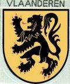
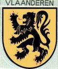

Het jaarthema komt op de rechterborstzak.
De Belgische vlag komt boven de linkerborstzak (niet op de flap).
Het nestdriehoekje en (hulp)nestleiderlintje(s) komen bovenaan de linkerschouder (enkel voor Welpen).
Het takkenteken komt onder het groepslintje op de rechterschouder.
Het groepslintje komt bovenaan op de rechterschouder.
 

De Vlaamse leeuw met daaronder het wapenschild van provincie Antwerpen.
Ook bij de jongverkenners wordt een belofte gedaan. Daar gaat het niet alleen om een gesproken belofte maar er komen ook al wat technische vaardigheden bij kijken (bv. Sjorring met timmermanssteek en mastworp, platte knoop, …). Enkel wanneer men de belofte heeft gedaan, naait men het belofteteken in het midden op de linkerborstzak.
Bij de welpen wordt al een eerste belofte gedaan waarin elke welp belooft zich in te zetten om er een leuk jaar van te maken. De eerstejaars krijgen dan een oranje wolfje en de derdejaars een grijs. Het teken wordt bevestigd in het midden van de linkerborstzak. De bedoeling is dat elk nieuw belofteteken het vorige vervangt.